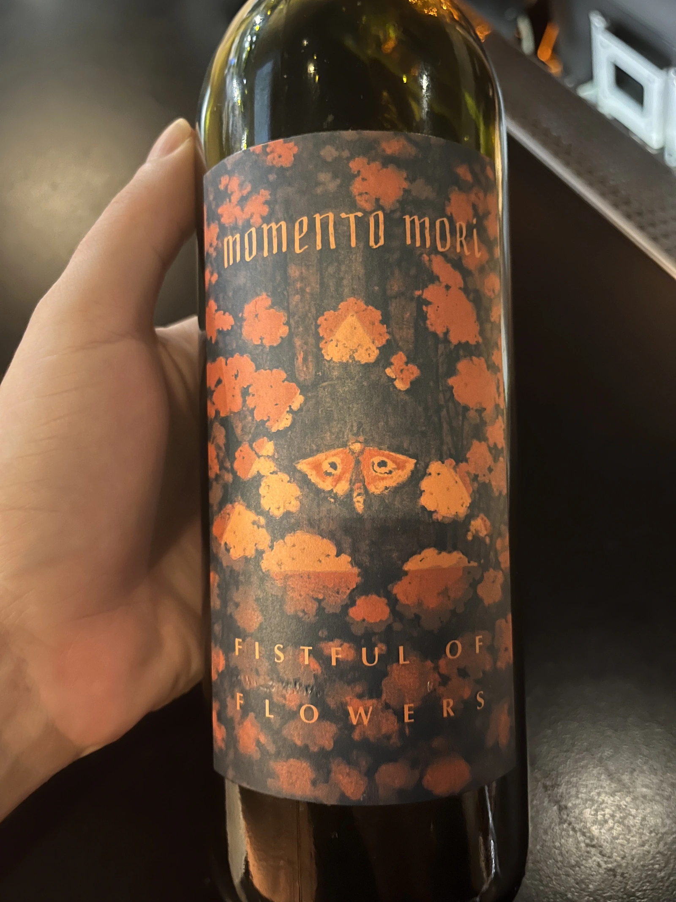
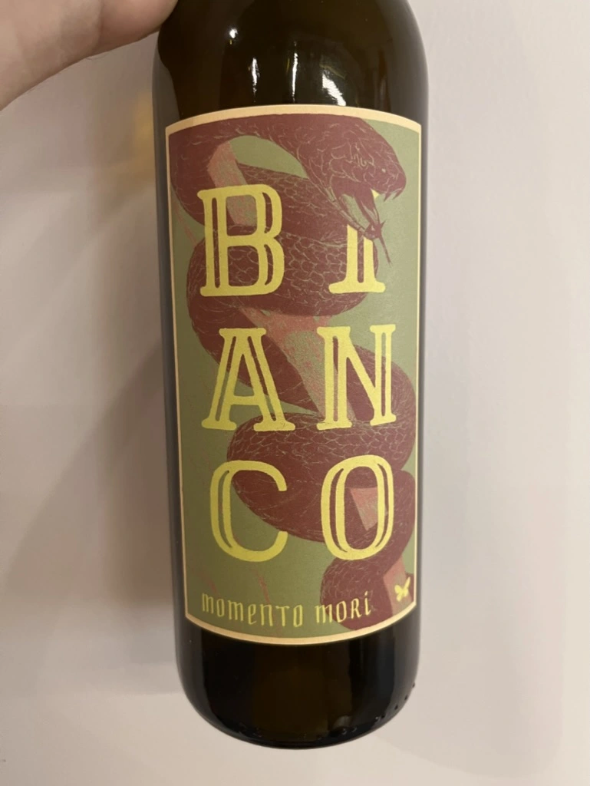
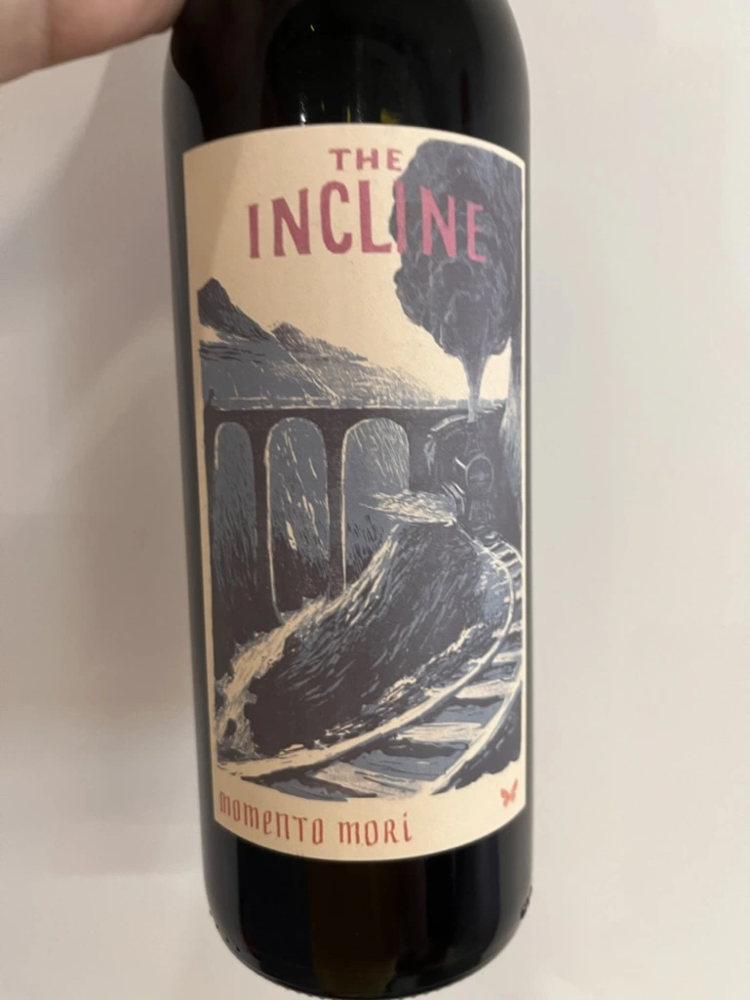
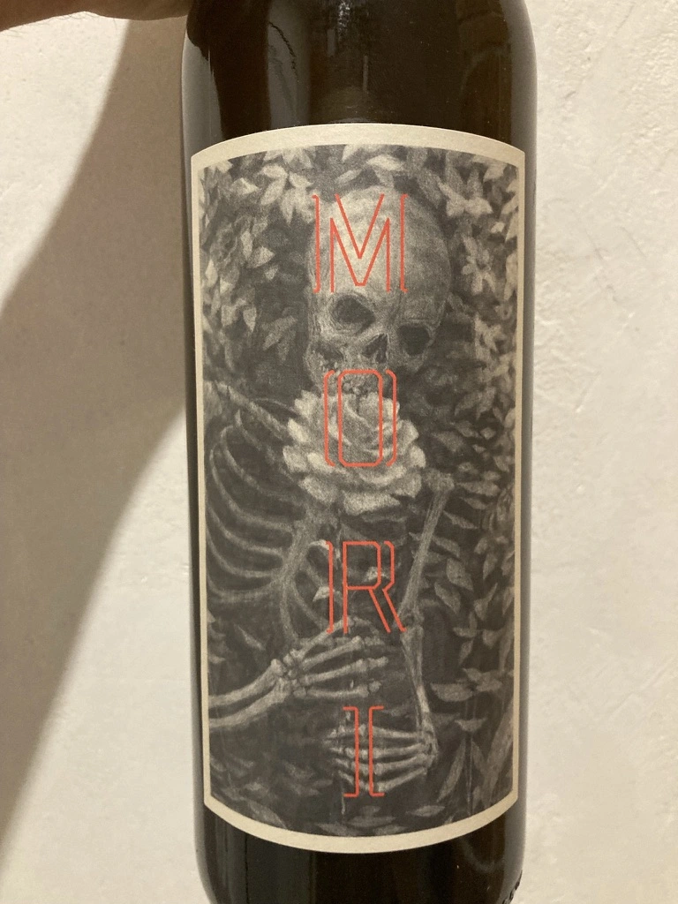
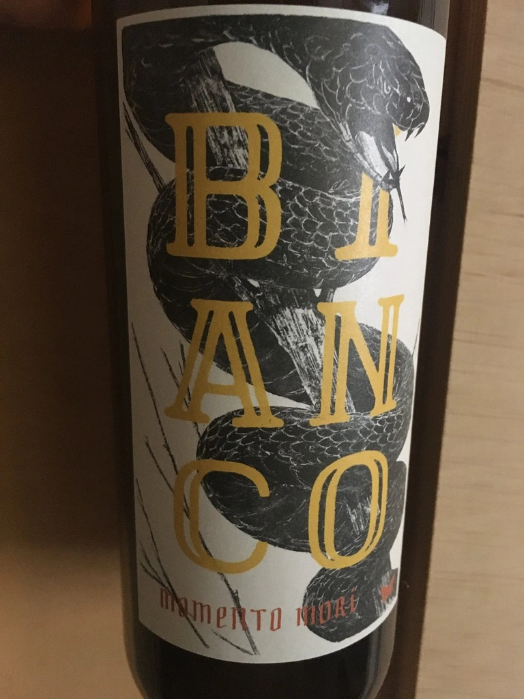
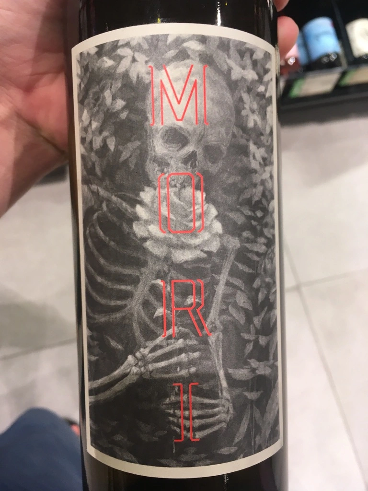
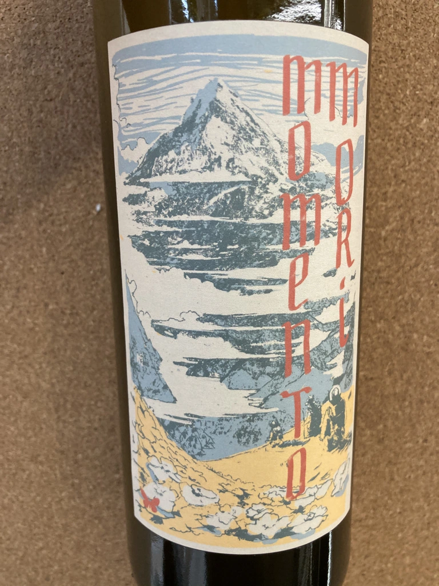

- Type
- White Still, Dry
- Producer
- Momento Mori
- Vintage
- 2020
- Location
- Australia, Gippsland
- Grapes
- Vermentino, Moscato Giallo
- Alcohol
- 11.5
- Sugar
- 0.1
- Price
- 1290 UAH
- Cellar
- N/A
Ratings
2022-07-12 - 8.00
Almost 3 years ago, I was looking at the bottle of Fistful of Flowers and considered buying it. I was hesitant. Not least because of excessive sediment flocks swimming in the bottle. And once I decided to give it a try, it was already out of stock.
Today I completed my gestalt with a different vintage. And actually, I am glad that I tasted 2020 because even Fistful of Flowers needs some time to settle down and become more cohesive.
Interesting blend of Vermentino and Moscato Giallo. The aroma like butterflies bursts from the glass and fills the room with its gifts. Field flowers, honey, ripe peach, cinnamon, cardamon, candied orange peel. All that with a nice musk touch that is more prevalent in the aftertaste. It is well-balanced, fresh and flavourful. My favourite part is the salty-musky finish. Overall, it’s definitely good. Maybe it’s a little bit too bright or even vulgar, but it has some charm.
Related






